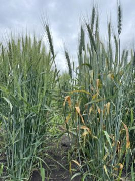
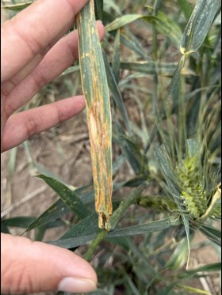
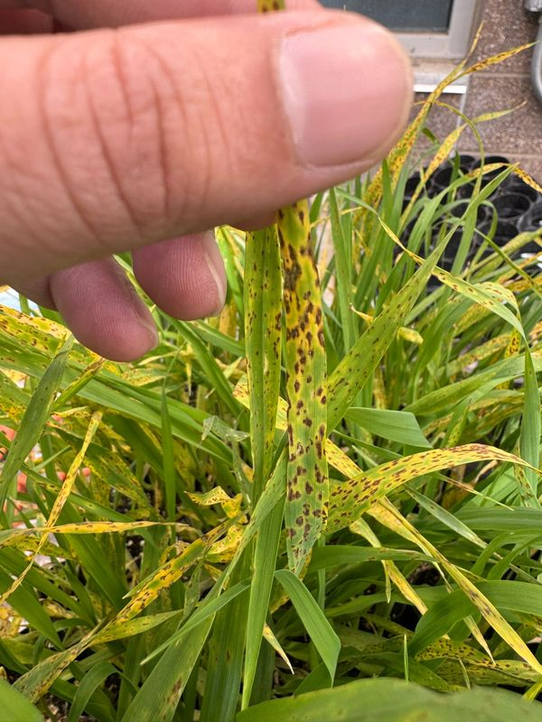

Host resistance in wheat and barley
I look for genetic resistance that breeders can use against bacterial and fungal diseases of small grains. My Ph.D. work focuses on bacterial leaf streak (BLS) in durum wheat, which I screen in field and greenhouse trials. In barley, I have mapped resistance to spot blotch and bacterial leaf streak with genome-wide association studies in the interspecific CMPP population, and screened elite spring barley for resistance to Fusarium head blight.


